その他のアーム(U.S.A)
詳細がほとんど不明のメーカーや掲載対象機種が少ないブランドがある。機種数の少ないもの、ブランドの詳細が不明なものはここで扱う。このページではトーンアーム関連のみ出したブランドを扱う。
CASTAGNA ( カスターニア)
アメリカのアームのブランド。1970年頃に東京・銀座の「丸正産業�梶vが輸入していた。
モデルA
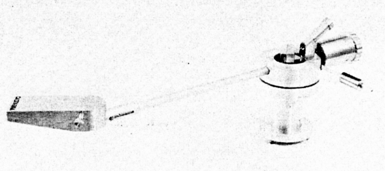
■価格 36,500円
■型式 ダイナミックバランス型
■全長 342�o
■実行長 232�o
■オーバー・ハング ±9.5�o
■トラッキングエラー
■針圧範囲 0〜5g
■アーム高さ
■アームベース穴
■アンチスケートディバイス
■アームリフター あり
■ラテラルバランサー あり
■カートリッジ自重
■線間容量
■発売 1970年頃
■販売終了 1971〜72年頃
■備考 価格は1970年頃のもの
ヘッドシェルコネクターは特殊型。
ヘッド部のオフセット・アングル可変型。
RABUCO (ラブコ)
アメリカのリニアトラッキング・アームで知られるメーカー。1970年頃にリニアトラッキング・アーム単体も輸入されていた。アームの移動動力は単2電池によるモーター駆動。当時の代理店はジャービス・アジア。のちにハーマン・インタナショナルよりプレイヤーが輸入されている。
SL-8
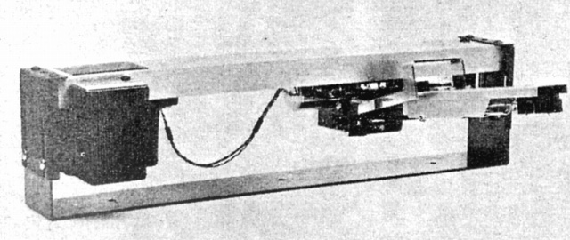
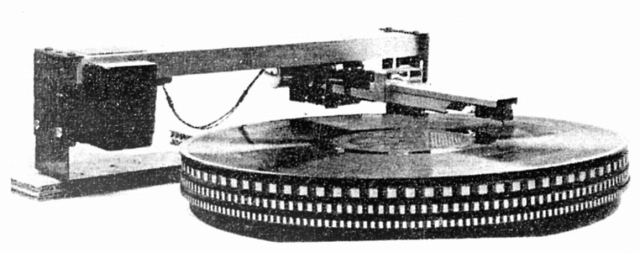
■価格 65,000円
■型式 ストレートライン・トラッキング・スタテックバンラス型
■全長
■実行長
■オーバー・ハング
■トラッキングエラー
■針圧範囲
■アーム高さ
■アームベース穴
■アンチスケートディバイス
■アームリフター
■ラテラルバランサー
■カートリッジ自重
■線間容量
■発売 1970年頃
■販売終了 1971〜72年頃
■備考 価格は1970年頃のもの
詳細不明。
SL-8E
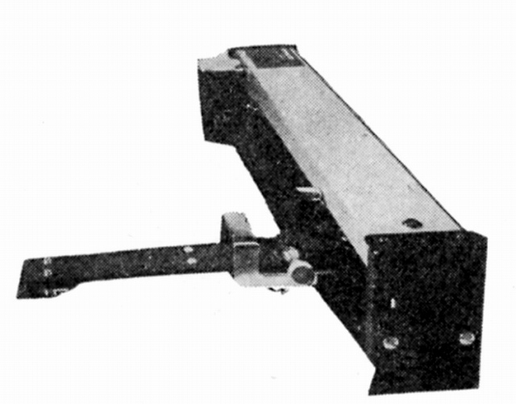
■価格 未定
■型式 ストレートライン・トラッキング・スタテックバンラス型
■全長
■実行長
■オーバー・ハング
■トラッキングエラー
■針圧範囲 最小0.25g
■アーム高さ
■アームベース穴
■アンチスケートディバイス
■アームリフター
■ラテラルバランサー
■カートリッジ自重
■線間容量
■発売 1973年頃
■販売終了 1974年頃
■備考 詳細不明
感度 垂直 5mg、水平 3mg。
QRK
アメリカのメーカー。1970年代にアイドラードライブのターンテーブルが紹介されていた。アームも2種あったようだ。当時の代理店はアール・エフ・エンタープライゼス。
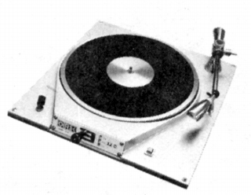
（同社のターンテーブル 12C 当時120,000円)
S-320
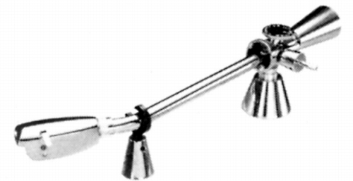
■価格 36,000円
■型式 ダイナミックバンラス型
■全長 311�o
■実行長 210�o
■オーバー・ハング
■トラッキングエラー 1゜以下
■針圧範囲
■アーム高さ 調節可能
■アームベース穴
■アンチスケートディバイス
■アームリフター
■ラテラルバランサー あり
■カートリッジ自重
■線間容量
■発売 1978年頃
■販売終了 1981年頃
■備考 価格は1978年頃のもの
S-260
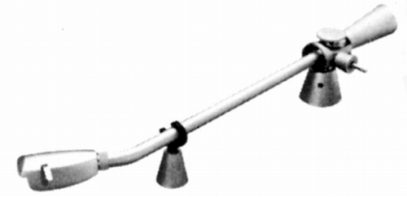
■価格 41,000円
■型式 ダイナミックバンラス型
■全長 400�o
■実行長 279�o
■オーバー・ハング
■トラッキングエラー 1゜以下
■針圧範囲
■アーム高さ 調節可能
■アームベース穴
■アンチスケートディバイス
■アームリフター
■ラテラルバランサー あり
■カートリッジ自重
■線間容量
■発売 1978年頃
■販売終了 1981年頃
■備考 価格は1978年頃のもの
MAGNEPAN（マグネパン）
アメリカの動電平面型スピーカーで知られるメーカー。1981年にアームが紹介された。当時の代理店はシイノ通商。
Unitrac-1
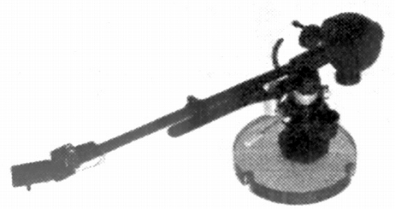
■価格 95,000円
■型式 スタティックバンラス型
■全長 290�o
■実行長 241.3�o
■オーバー・ハング 17.1�o
■トラッキングエラー -1.77゜（外周）
■針圧範囲
■アーム高さ 22.73〜50.8�o
■アームベース穴 23�o
■アンチスケートディバイス あり
■アームリフター あり
■ラテラルバランサー あり
■カートリッジ自重 3.0〜12.0g
■線間容量
■発売 1981年
■販売終了 1990年頃
■備考 価格は1981年頃のもの
1985年頃は135,000円
1989年頃は120,000
バーチカル・トラッキングアングル調整機構あり
ワンポイント・サポート型
ヘッドシェル及びパイプアーム部にカーボンファイバー採用。
SOUTHER（サウザー）
これもリニアトラッキング型のアームを扱っていたメーカー。当時の代理店はサエク。コマース。
SLA-3
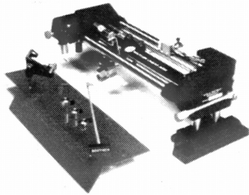
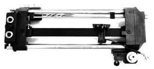
■価格 220,000円
■型式 リニアトラッキング型
■全長 �o
■実行長 �o
■オーバー・ハング
■トラッキングエラー
■針圧範囲
■アーム高さ
■アームベース穴
■アンチスケートディバイス
■アームリフター あり(オートリフトアップ付き）
■ラテラルバランサー
■カートリッジ自重
■線間容量
■発売 1984年
■販売終了 1991〜92年頃
■備考 価格は1985年頃のもの
バーチカル・トラッキングアングル調整機構あり
カウンターウェイト 2、4g。
WELL-TEMPERED（ウエルテンパード）
ユニークな構造のアームで知られるアナログディスクプレーヤーのブランド。アームも単体発売されていた。ブランド名は音楽用語のウエルテンパードスケール（平均律）からきているそうだ。当時の代理店はスキャンテック。
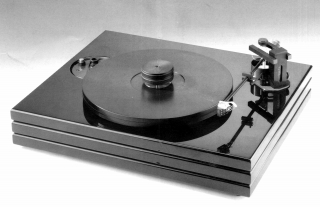
(同社のプレイヤー BLAC CLASSIC)
Well-Tempered Arm
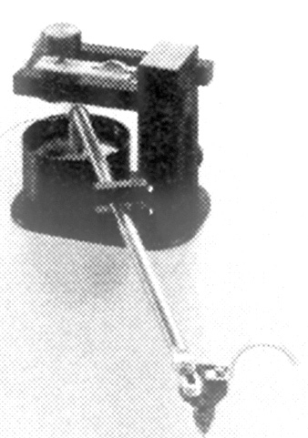
■価格 150,000円
■型式 スタティックバランス型
■全長 �o
■実行長 �o
■オーバー・ハング 16�o
■トラッキングエラー
■針圧範囲
■アーム高さ
■アームベース穴
■アンチスケートディバイス あり
■アームリフター
■ラテラルバランサー
■カートリッジ自重
■線間容量
■発売 1987年
■販売終了 年頃
■備考 価格は1987年頃のもの
1993年頃には200,000円
1995年頃には180,000円
1999年頃には195,000円
オイルダンピング機構あり
珍しいベアリングレスのアーム。
1990年代後半には、「Classic
Arm」と呼ばれるようになる。
Classic V Arm
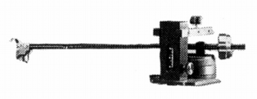
■価格 275,000円
■型式 スタティックバランス型
■全長 315�o
■実行長 235�o
■オーバー・ハング 16�o
■トラッキングエラー
■針圧範囲
■アーム高さ
■アームベース穴
■アンチスケートディバイス あり
■アームリフター
■ラテラルバランサー
■カートリッジ自重
■線間容量
■発売 1999年8月
■販売終了 年頃
■備考 価格は1999年頃のもの
アジマス調整、VTA（バーチカル・トラッキング・アングル？）調整機構あり
内部配線は6N銅線、パイプ内はダンピング材充当。
他にReference Arm(295,000円)という機種が1990年代後半には存在したようだ。
GURAHAM ENGINEERING（グラハム・エンジニアリング）
アームのブランド。2000年代も活動を続けているようだ。当時の代理店はスキャンテック。
Model 1.5t
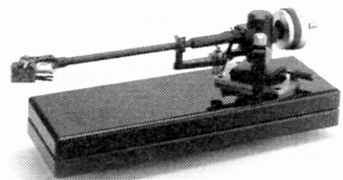
■価格 486,000円
■型式 ワンポイントサポート式スタティックバランス型
■全長 320�o
■実行長 235�o
■オーバー・ハング
■トラッキングエラー
■針圧範囲
■アーム高さ
■アームベース穴
■アンチスケートディバイス
■アームリフター あり
■ラテラルバランサー
■カートリッジ自重 4〜16g
■線間容量
■発売 1990年5月
■販売終了 1996〜98年頃
■備考 価格は1993年頃のもの
1995年頃には450,000円
オイルダンピング機構あり
別売スペアアーム(59,000円)あり。
Model 2.0t/e
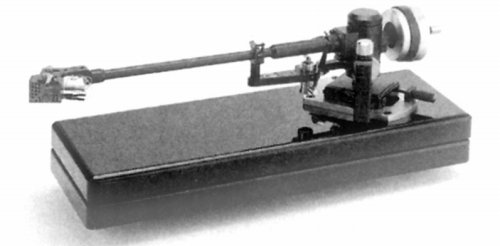
■価格 580,000円
■型式 ワンポイントサポート式スタティックバランス型
■全長 320�o
■実行長 235�o
■オーバー・ハング 16�o
■トラッキングエラー
■針圧範囲
■アーム高さ 44〜53.5�o
■アームベース穴
■アンチスケートディバイス あり
■アームリフター あり
■ラテラルバランサー
■カートリッジ自重 4〜16g
■線間容量
■発売 1997年1月
■販売終了 年頃
■備考 価格は1999年頃のもの
オイルダンピング機構、アジマス調整あり
別売スペアアーム(120,000円)あり。
LINN
LP-12用マウントベース付きモデル(580,000円)あり
IMMEDIA（イメディア）
アームのブランド。比較的新しいブランドのようだ。代理店はスキャンテック。
PRM2 tonearm
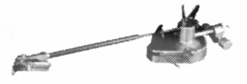
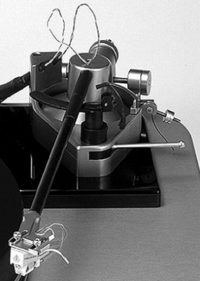
■価格 480,000円
■型式 スタティックバランス型
■全長 335�o
■実行長 254�o
■オーバー・ハング 16�o
■トラッキングエラー
■針圧範囲
■アーム高さ
■アームベース穴
■アンチスケートディバイス あり
■アームリフター あり
■ラテラルバランサー
■カートリッジ自重
■線間容量
■発売 1998年12月
■販売終了 年頃
■備考 価格は1998年頃のもの
オイルダンピング機構、アジマス調整あり
サイトマップへ